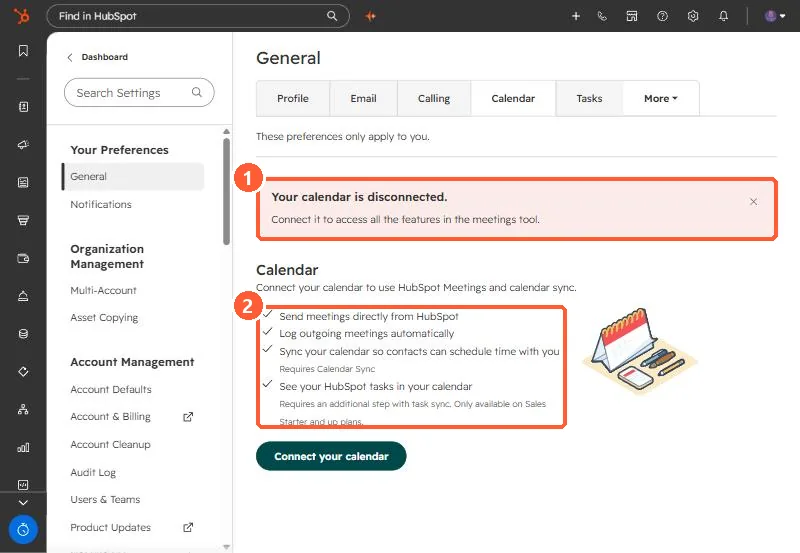

Short answer
Each user connects a calendar under Settings > General > Calendar. It lets you send meetings from HubSpot, log outgoing meetings, and offer scheduling pages. HubSpot syncs only your primary calendar, and you can connect Google or Outlook, not both. The page in my demo portal says showing HubSpot tasks in your calendar needs an extra task sync step and is only on Sales Starter and up.
1. Check the status
My demo portal user is disconnected, and the page says so in red.


2. Rules
- Only the primary calendar syncs.
- Google or Outlook, not both at once.
- Task sync needs an extra step and Sales Starter or above.
3. Why it matters
Recurring meetings not logging and missing meeting links often trace back to a disconnected calendar. See recurring meetings not logging and auditing every user's connections.